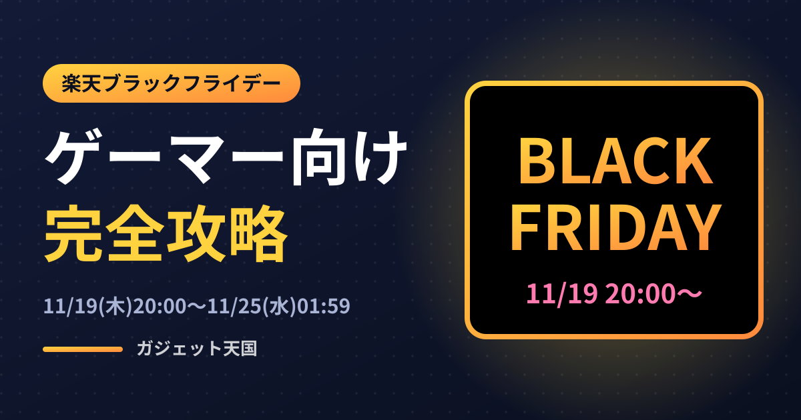
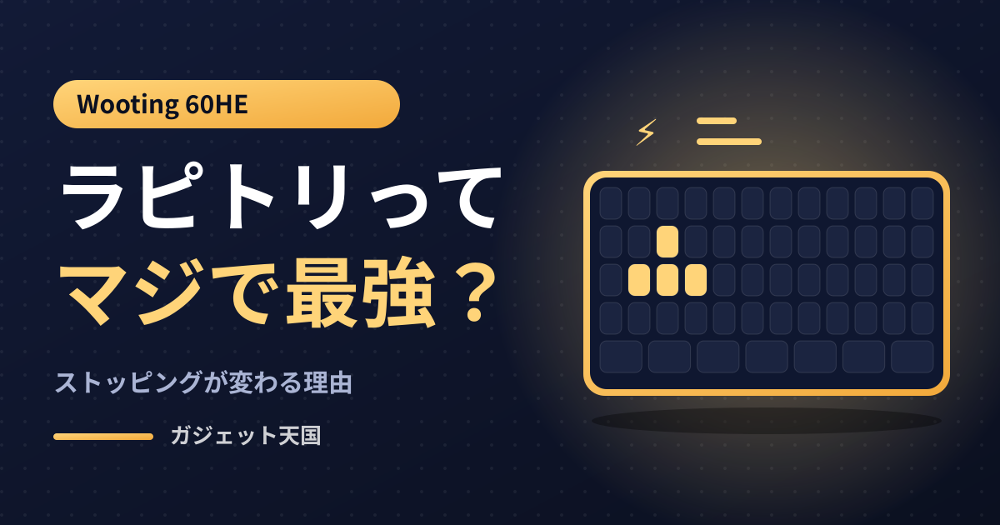
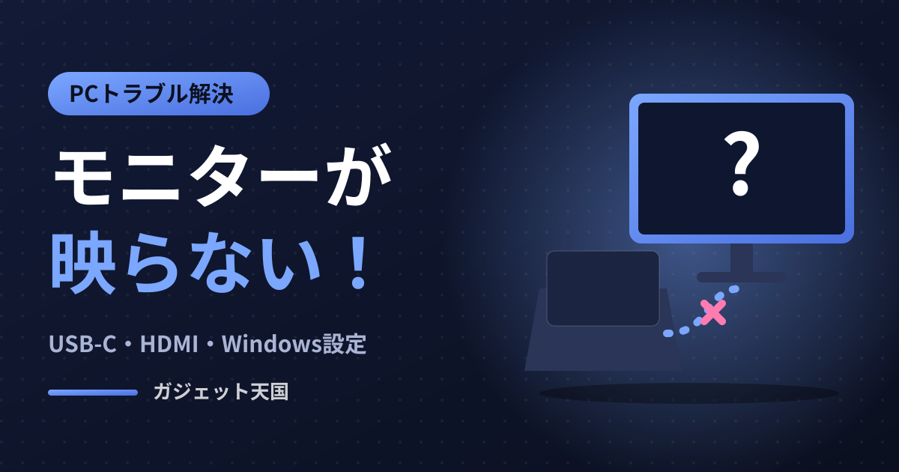
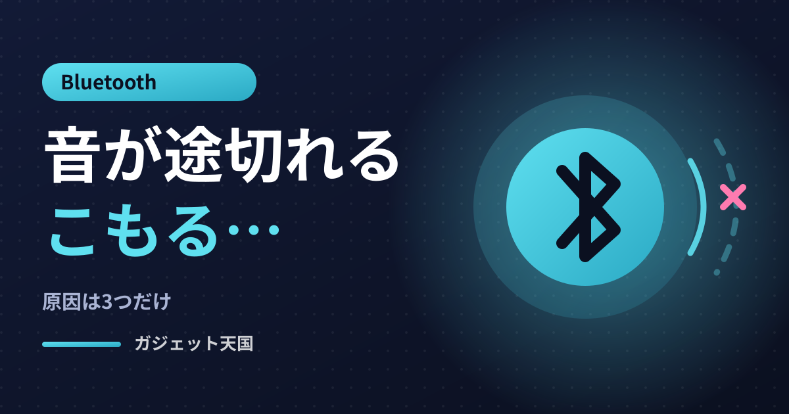
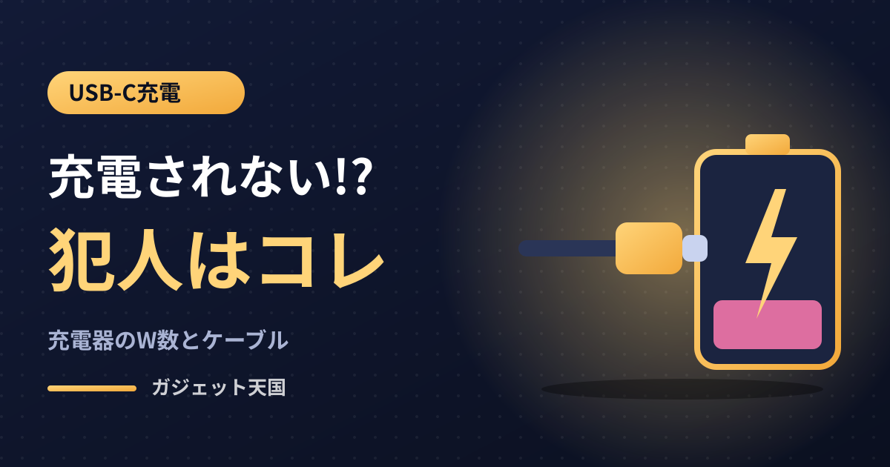
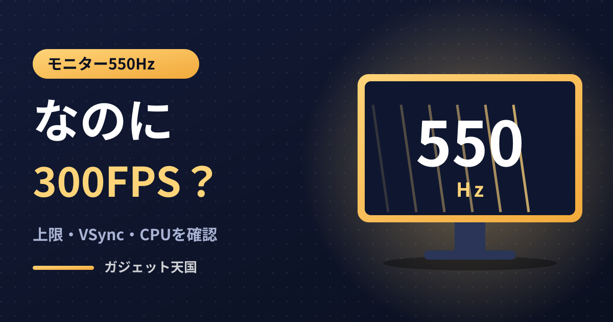
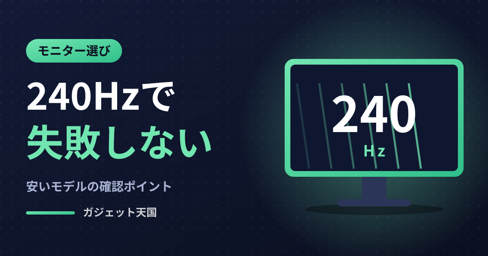
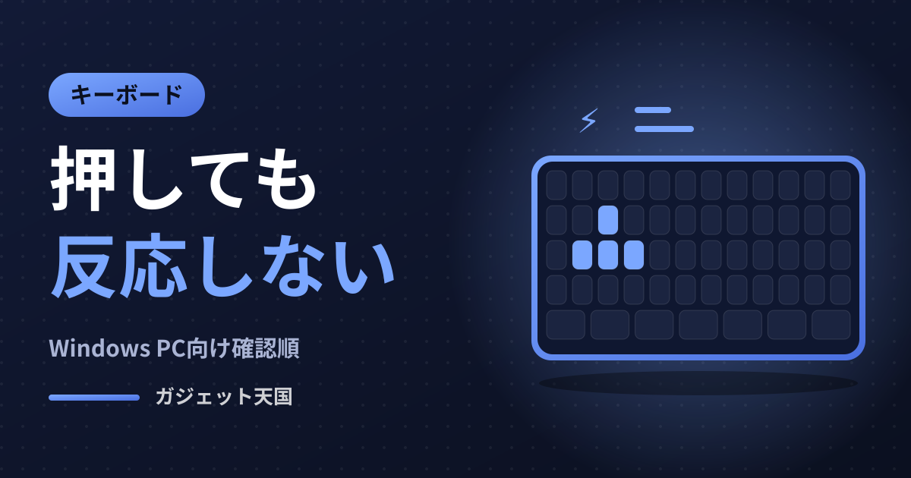

記事一覧
PC設定、VALORANT、VR、機器トラブルを中心に、確認できた内容だけを公開しています。

11/19 20:00スタート。カウントダウン・ガチャ・チェックリスト付き。

ブラウザですぐ遊べる30秒のエイム練習ゲーム。的をクリックしてヒット数と命中率からS〜Dランクを判定。結果はXでシェアで…

画面が緑になった瞬間にクリックして反応速度（ms）を測定する無料テスト。5回の平均とベストを表示し、結果はXでシェアでき…

VALORANT・CS2・Apex・Overwatch 2の感度を相互に換算し、振り向き(cm/360°)とeDPIを自…

4つの質問に答えるだけで、あなたのマウスの持ち方（かぶせ持ち・つかみ持ち・つまみ持ち）を診断。持ち方別に合うマウスの形と…

ゲーミングマウスのポーリングレート（1000Hz・2000Hz・4000Hz・8000Hz）の違いを図解。報告間隔、CP…

ゲーミングマウスパッドの選び方を解説。振り向きから必要な横幅を計算できるツール付き。布（コントロール・スピード）・ハイブ…

5年使ってヘタらなかった理由、安い椅子との違い、体格に合わせた選び方。

ストッピングがどう変わるか、全員に必要か。ランクでの実使用で本音を書きます。

音楽用TWSで足音は聞けるのか。遅延・定位・低音の3条件で整理。

SUPERLIGHT 2の「大きさ問題」から考える、持ち方・手の大きさ・感度別の選び方。

144→240は誤差なのか。体感差と、PCが240FPSを出せるかという前提。

外部モニターが「信号なし」で映らないときに、入力切替、ケーブル、USB-Cの映像出力対応、Windowsの表示設定を順番に確認する方法。

Windows PCでBluetoothイヤホンの音が途切れる、マイクを使うと音がこもる、しばらくすると切れる場合の原因と対処を順番に解説。

USB-C充電器でノートPCが充電されない、充電が遅い、使いながらだと減る場合に、充電器のW数、ケーブルの対応W数、端子を確認する方法。

Meta QuestをPCにつないでSteamVRなどを遊ぶとき、映像のカクつき・遅延・ノイズが出る原因を、Wi-Fi環境、ケーブル、PC性能の順に切り分ける方法。

演出系はオフ、細かさ系は下げる、くっきり系は残す。設定項目ごとの考え方と、変えたあとの確認手順。

FPS上限、VSync、GPU設定、CPUボトルネック、接続端子を順番に確認。

VALORANT用に240Hzモニターを選ぶとき、解像度、端子、パネル、応答速度、PC性能をどう確認するかを初心者向けに整理します。

VALORANTのFPSが伸びないときに、ゲーム内上限、VSync、GPU設定、CPUボトルネック、温度を順番に確認する方法。

Meta Quest 3SをPCと接続してSteamVRを使う前に、PC性能、接続方法、Wi-Fi環境、ケーブルを確認するための入門ガイド。

PICO 4でSteamVR使用時に画面が二重に見える、表示がおかしい場合に、再起動、解像度、接続、アプリを順番に確認するチェックリスト。

Windows PCでキーボード入力が反応しないときに、接続、電源、別ポート、Bluetooth、ドライバーを順番に確認する方法。

PCゲーム用コントローラーの右スティックだけ反応しない場合に、ゲーム設定、入力テスト、接続、ファームウェアを確認する方法。